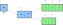
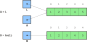
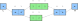
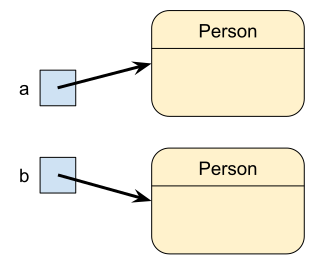
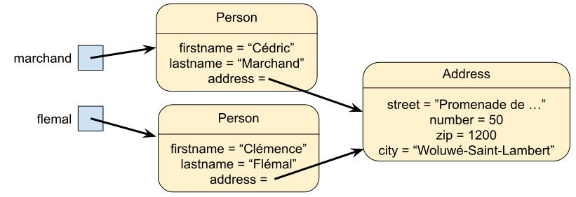

A = [1, 2] B = [3, 4, 5] L = [A, B] # Équivalent à L = [[1, 2], [3, 4, 5]] print(L[0][1]) # 2 print(L[1][2]) # 5

while ou forL = [[1, 2], [3, 4, 5]] for elem in L: # elem est une liste for data in elem: # data est un nombre entier print(data, end=' ') print('| ', end='')
M = [[1, 2, 3], [4, 5, 6]]
len
La matrice a len(M) lignes et
len(M[0]) colonneswhile et indices ou avec boucle
for# Avec une boucle while i = 0 while i < len(M): j = 0 while j < len(M[0]): print(M[i][j]) j += 1 i += 1 # Avec une boucle for for line in M: for elem in line: print(elem)
# Liste de tuples coords = [(0,0), (7,-2), (4,5), (-3,-9)] # Liste d'ensembles lunches = [ {'apple', 'banana', 'grape'}, {'yogurt', 'cereals'}, {'bread', 'cheese', 'ham'}, {'sausage'} ] # Liste de dictionnaires contacts = [ {'firstname': 'Alexis', 'lastname': 'King'}, {'firstname': 'Brice', 'lastname': 'Monster'}, {'firstname': 'Sébastien', 'lastname': 'Adams'} ]
# Tuples en clés d'un dictionnaire config = { (0, 0): 'Arnaud', (2, 1): 'Louis', (-1, 3): 'Marie', (3, -1): 'Dan' } # Listes en valeurs d'un dictionnaire config = { (0, 0): ['Arnaud', 'Pierre'], (2, 1): ['Louis'], (-1, 3): ['Marie', 'Éric', 'Tom'], (3, -1): ['Dan'] }
address = {'street': "Promenade de l'Alma", 'number': 50, 'zip': 1200, 'city': "Woluwé-Saint-Lambert"} marchand = {'firstname': "Cédric", 'lastname': "Marchand", 'address': address} # Équivalent à # marchand = {'firstname': "Cédric", 'lastname': "Marchand", # 'address': {'street': "Promenade de l'Alma", 'number': 50, # 'zip': 1200, 'city': "Woluwé-Saint-Lambert"}} print(marchand['firstname']) # Cédric print(marchand['address']['city']) # Woluwé-Saint-Lambert
magic1 appelle une méthode sur datamagic2 modifie la variable locale
datadef magic1(data: list[int]): data.append(4) def magic2(data: list[int]): data = [] a = [0, 1, 2, 3] print(a) magic1(a) print(a) magic2(a) print(a)
list Ou avec les fonctions
set, dict...L = [1, 2, 3, 4, 5] A = L # A est un alias de L A[0] = 42 print(L) # [42, 2, 3, 4, 5] L = [1, 2, 3, 4, 5] B = list(L) # B est une copie de L B[0] = 42 print(L) # [1, 2, 3, 4, 5]

L = [[1, 2], [3, 4, 5]] A = list(L) A[1][0] = 42 print(L) # [[1, 2], [42, 4, 5]]

copycopy
copy pour une copie "shallow"deepcopy pour une copie "deep"import copy L = [[1], [2, 3], [4, 5, 6]] A = copy.copy(L) # A est une copie shallow de L B = copy.deepcopy(L) # A est une copie deep de L
address = {'street': "Promenade de l'Alma", 'number': 50, 'zip': 1200, 'city': "Woluwé-Saint-Lambert"} marchand = {'firstname': "Cédric", 'lastname': "Marchand", 'address': address} print(type(address)) # <class dict> print(type(marchand)) # <class dict>
dict
Impossible de différencier les types
d’objectsfrom typing import Any def fullname(person: dict[str, Any]) -> str: return f"{person['firstname']} {person['lastname']}" def display_address(address: dict[str, Any]) -> str: return f"{address['street']}, {address['number']}\n{address['zip']} {address['city']}" print(display_address(marchand)) # KeyError
Address et Personmarchand référencera alors une valeur du type
Personaddress référencera une valeur du type
Addressint,
float, str, list, …) sont des
classes. Et les valeurs des objetsclass Address: def __init__(self, street: str, number: int, zip: int, city: str): self.street = street self.number = number self.zip = zip self.city = city address = Address("Promenade de l'Alma", 50, 1200, "Woluwé-Saint-Lambert") print(address.zip) # 1200
Address contient une méthode
nommée __init__ qui sert à initialiser un nouvel
objet de la classe. Cette méthode est aussi
appelée le constructeur de la classeself.__init__ peut recevoir autant de paramètres
supplémentaires que l’on veut.street, number,
zip et cityclass Address: def __init__(self, street: str, number: int, zip: int, city: str): self.street = street self.number = number self.zip = zip self.city = city def display(self): return f"{self.street}, {self.number}\n{self.zip} {self.city}" address = Address("Promenade de l'Alma", 50, 1200, "Woluwé-Saint-Lambert") print(address.display()) # Promenade de l'Alma, 50 # 1200 Woluwé-Saint-Lambert
Comme nous l’avons vu avec la classe list, une
classe peut avoir des fonctionnalités. La
fonctionnalité append() pour la classe list
par exemple
Ces fonctionnalités sont appelées méthodes et
sont des fonctions créées dans la classe et prenant l’objet à traiter en
paramètre (self).
# Construction d'un objet address = Address("Promenade de l'Alma", 50, 1200, "Woluwé-Saint-Lambert") # Accès à un attribut print(address.zip) # 1200 # Appel d'une méthode print(address.display()) # Promenade de l'Alma, 50 # 1200 Woluwé-Saint-Lambert
class
pass Aussi appelée instruction
vide car ne fait rienclass Person: pass
a = Person() b = Person()

__init__ Admet au moins un paramètre
qui est selfself référence l'objet à
construire Permet d'accéder aux attributs
et fonctionnalités de l'objetclass Person: def __init__(self, firstname: str, lastname: str, address: Address): self.firstname = firstname self.lastname = lastname self.address = address
address = Address("Promenade de l'Alma", 50, 1200, "Woluwé-Saint-Lambert") marchand = Person("Cédric", "Marchand", address) flemal = Person("Clémence", "Flemal", address)

print(marchand) print(flemal)
self à l'intérieur du code de la
classeprint(marchand.firstname) print(flemal.address.number)
id renvoie
l'identitéprof = flemal print(id(marchand)) print(id(flemal)) print(id(prof))
self.x et self.y représentent
norm pour calculer la longueur du
vecteur La norme vaut
class Vector: def __init__(self, x: float, y: float): self.x = x self.y = y def norm(self): return sqrt(self.x ** 2 + self.y ** 2) u = Vector(1, -1) print(u.norm())
selfclass Vector: def __init__(self, x: float, y: float): pass def norm(self): return sqrt(x ** 2 + y ** 2) u = Vector(1, -1) print(u.norm())
__str__ construit une représentation
str de l’objet Renvoie une
chaine de caractères lisible de l’objetclass Vector: def __init__(self, x: float, y: float): self.x = x self.y = y def __str__(self): return f'({self.x}, {self.y})' u = Vector(1, -1) print(u)
u = Vector(1, -1) v = Vector(1, -1) print(u == v) # False
u = Vector(1, -1) v = u print(u == v) # True
__lt__ pour <,
__le__ pour <=, __eq__ pour
==...from typing import Self class Vector: def __init__(self, x: float, y: float): self.x = x self.y = y def __eq__(self, other: Self): return self.x == other.x and self.y == other.y # ... u = Vector(1, -1) v = Vector(1, -1) print(u == v) # True print(u is v) # False
is Comparaison des références des
objets__add__ pour +,
__sub__ pour -, __mul__ pour
*...from typing import Self class Vector: def __init__(self, x: float, y: float): self.x = x self.y = y def __add__(self, other: Self): return Vector(self.x + other.x, self.y + other.y) # ... u = Vector(1, -1) v = Vector(2, 1) print(u + v)
class Rectangle: def __init__(self, lowerleft: Vector, width: float, height: float, angle: float = 0): self.lowerleft = lowerleft self.width = width self.height = height self.angle = angle p = Vector(1, -1) r = Rectangle(p, 100, 50) print(r.lowerleft) # (1, -1)
class Rectangle: # ... def __str__(self): return f"Rectangle en {self.lowerleft} + de longueur {self.width}" \ f"et de hauteur {self.height} incliné de {self.angle} degrés" r = Rectangle(Vector(1, -1), 100, 50) print(r)
str de self.lowerleft
fait appel à la méthode __str__ de la classe
VectorAddressclass Address: def __init__(self, street: str, number: int, zip: int, city: str): self.street = street self.number = number self.zip = zip self.city = city def display(self): return f"{self.street}, {self.number}\n{self.zip} {self.city}"
__eq__ elle
serait aussi fort peu intéressante à écrire.dataclassfrom dataclasses import dataclass @dataclass class Address: street: str number: int zip: int city: str address = Address("Promenade de l'Alma", 50, 1200, "Woluwé-Saint-Lambert") print(address.zip) # 1200 print(address) # Address(street="Promenade de l'Alma", number=50, # zip=1200, city='Woluwé-Saint-Lambert') address2 = Address("Promenade de l'Alma", 50, 1200, "Woluwé-Saint-Lambert") print(address == address2) # True
dataclass a automatiquement un constructeur, une
méthode __eq__, une méthode __str__ Et d’autres choses qui dépassent le cadre de ce
coursdataclassfrom dataclasses import dataclass @dataclass class Address: street: str number: int zip: int city: str def display(self): return f"{self.street}, {self.number}\n{self.zip} {self.city}"
__str__from dataclasses import dataclass @dataclass class Address: street: str number: int zip: int city: str def display(self): return f"{self.street}, {self.number}\n{self.zip} {self.city}" def __str__(self): return self.display()
dataclassVector sous forme de
dataclassfrom dataclasses import dataclass @dataclass class Vector: x: float y: float def __add__(self, other: Self): return Vector(self.x + other.x, self.y + other.y) def __str__(self): return f'({self.x}, {self.y})'